第 1 页 · 处理缺失值
处理缺失值
缺失值产生原因
缺失值的产生的原因多种多样，主要分为机械原因和人为原因。
机械原因:
测量设备故障
测量数据采集错误
数据存储的失败、存储器损坏
人为原因:
人的主观失误历史局限性
被采访者有意隐瞒回答问题无效
第 2 页 · 处理缺失值
处理缺失值
常用处理方法
直接删除该条数据
在缺失数据不多，不会影响到数据分析时，该方法是可行的。
进行缺失值填补
利用平均数、中位数或者众数代替缺失值，也可以通过比较其他属性，用相似数据记录的数据值进行代替。
面对序列型数据的缺失问题时，可以使用前一条特征数据、后一条特征数据或前后两条特征数据的平均值对缺失值进行填充。
重新收集数据
第 3 页 · 删除缺失属性数据, 如表2 所示。
| 处理缺失值 | |||||
| 用户名 | 购买日期 | 商品名称 | 数量 | 单价 (元) | 地址 |
| 张三 | 2024-01-01 | 笔记本电脑 | 1 | 5000 | 北京市朝阳区 |
| 李四王五 | 2024-01-03 | 手机 无线耳机 | 2 | 3000 | 上海市浦东新区广州市天河区 |
| 赵六 | 2024-01-04 | 移动电源 | -1 | 150 | 深圳市南山区 |
| 张三 | 2024-01-01 | 笔记本电脑 | 1 | 5000 | 北京市朝阳区 |
删除缺失属性数据, 如表2 所示。
表 2: 删除缺失数据
| 用户名 购买日期 | 商品名称 | 数量 | 单价 (元) | 地址 |
| 张三 2024-01-01 | 笔记本电脑 | 1 | 5000 | 北京市朝阳区 |
| 赵六 2024-01-04 | 移动电源 | -1 | 150 | 深圳市南山区 |
| 张三 2024-01-01 | 笔记本电脑 | 1 | 5000 | 北京市朝阳区 |
第 4 页 · 进行缺失值填补
| 用户名 | 购买日期 | 商品名称 | 数量 | 单价 (元) | 地址 |
| 张三 | 2024-01-01 | 笔记本电脑 | 1 | 5000 | 北京市朝阳区 |
| 李四 | 2024-01-01 | 手机 | 1 | 3000 | 上海市浦东新区 |
| 王五 | 2024-01-03 | 无线耳机 | 2 | 1 | 广州市天河区 |
| 赵六 | 2024-01-04 | 移动电源 | -1 | 150 | 深圳市南山区 |
| 张三 | 2024-01-01 | 笔记本电脑 | 1 | 5000 | 北京市朝阳区 |
| 处理缺失值 | |||||
| 用户名 | 购买日期 | 商品名称 | 数量 | 单价 (元) | 地址 |
| 张三 | 2024-01-01 | 笔记本电脑 | 1 | 5000 | 北京市朝阳区 |
| 李四王五 | 2024-01-03 | 手机 无线耳机 | 2 | 3000 | 上海市浦东新区广州市天河区 |
| 赵六 | 2024-01-04 | 移动电源 | -1 | 150 | 深圳市南山区 |
| 张三 | 2024-01-01 | 笔记本电脑 | 1 | 5000 | 北京市朝阳区 |
进行缺失值填补
用众数填补购买日期，用平均值填补购买数量。单价需要重新收集数据。如表3 所示。
表 3: 填补缺失数据
第 5 页 · Python 实现缺失值处理
Python 实现缺失值处理
借助 df.dropna() 删除缺失值
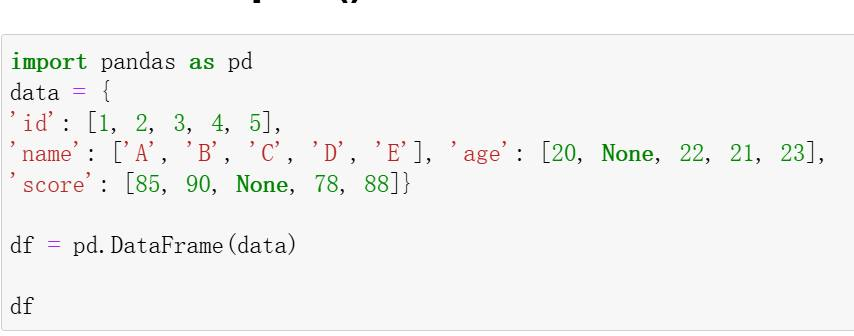
第 6 页 · Python 实现缺失值处理
Python 实现缺失值处理
借助 df.fillna() 填补缺失值
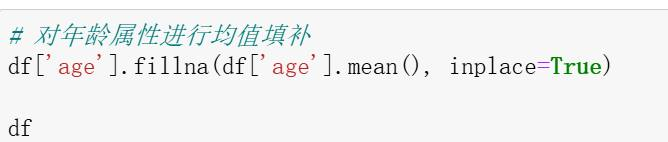
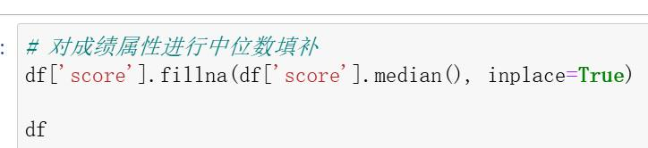
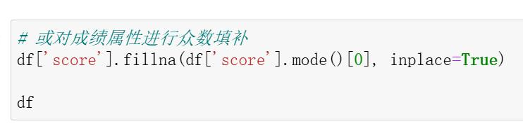
第 7 页 · Python 实现缺失值处理
Python 实现缺失值处理
借助 df.fillna() 填补缺失值——序列数据填补
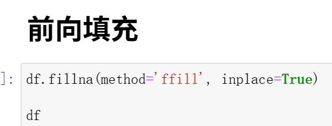
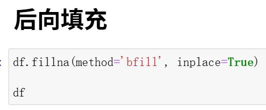
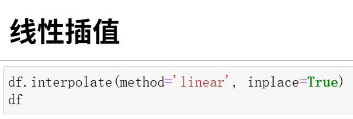
第 8 页 · 处理异常值
处理异常值
异常值产生原因
异常值又称为离群点，可能是随机因素导致的，也可能是各种机制作用产生的。
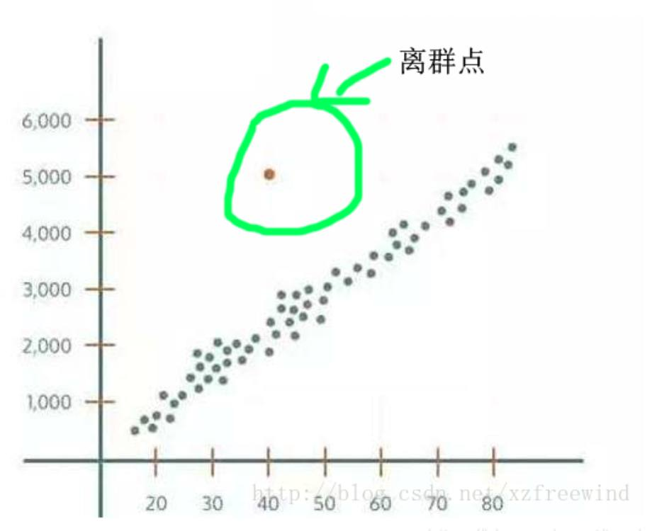
第 9 页 · 处理异常值
处理异常值
异常值产生原因
异常值又称为离群点，可能是随机因素导致的，也可能是各种机制作用产生的。
异常值处理的步骤
异常值检测
箱形图
简单统计量
3σ 原则
基于概率分布密度的检测基于聚类的离群点检测
异常值筛选异常值处理
第 10 页 · 处理异常值
处理异常值
箱形图方法
于 1977 年由美国著名统计学家约翰∙图基（John Tukey）发明。能显示出一组数据的最大值、最小值、中位数、及上下四分位数。
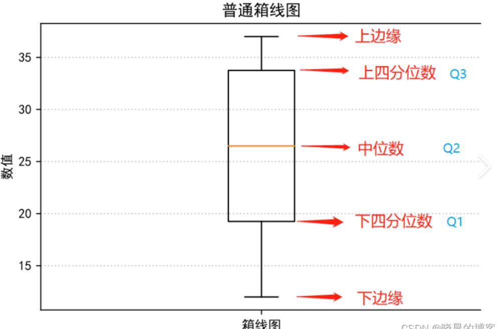
第 11 页 · 处理异常值
处理异常值
箱形图方法
于 1977 年由美国著名统计学家约翰∙图基（John Tukey）发明。能显示出一组数据的最大值、最小值、中位数、及上下四分位数。
上四分位数: 箱型图上边界，即所有数值从小到大排列，第
75% 分位数。
中位数: 箱型图中的竖线，即所有数值从小到大排列，第
50% 分位数。
下四分位数: 箱型图下边界，即所有数值从小到大排列，第
25% 分位数。
四分位距 IQR: 箱型图上边界与下边界之差，即所有数值从小到大排列，第 75% 分位数与第 25% 分位数之差。
第 12 页 · 处理异常值
处理异常值
例
箱形图方法
于 1977 年由美国著名统计学家约翰∙图基（John Tukey）发明。能显示出一组数据的最大值、最小值、中位数、及上下四分位数。
上四分位数: 箱型图上边界，即所有数值从小到大排列，第
75% 分位数。
中位数: 箱型图中的竖线，即所有数值从小到大排列，第
50% 分位数。
下四分位数: 箱型图下边界，即所有数值从小到大排列，第
25% 分位数。
四分位距 IQR: 箱型图上边界与下边界之差，即所有数值从小到大排列，第 75% 分位数与第 25% 分位数之差。
以一组序列数为例：12，15，17，19，20，23，25，28，30，33，
34，35，36，37 （共 14 个）请计算箱形图相关因数。
第 13 页 · 处理异常值
处理异常值
箱形图方法
箱型图对异常值进行检验通过四分位距（IQR）作为筛选基准，数据集中值大于上四分位 +1.5*IQR（上限）
或值小于下四分位-1.5*IQR（下限）为异常值。
第 14 页 · 处理异常值
处理异常值
箱形图方法
箱型图对异常值进行检验通过四分位距（IQR）作为筛选基准，数据集中值大于上四分位 +1.5*IQR（上限）
或值小于下四分位-1.5*IQR（下限）为异常值。
例子展示了数据集为
{4,4,5,5,5,5,6,6,6,7,8,16} 的箱型图，
该数据集的上边缘、上四分位数、中
位数、下四分位数、下边缘分别为：8.75、6.5、5.5、5、2.75，且存在异常值 16
(16 > 6.5 + 1.5 ∗ (6.5 − 5) = 8.75)。
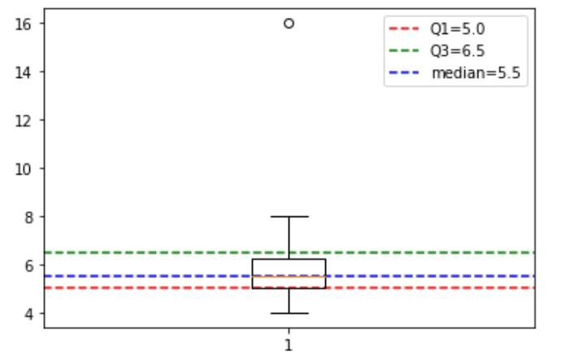
第 15 页 · Python 实现箱形图绘制
Python 实现箱形图绘制
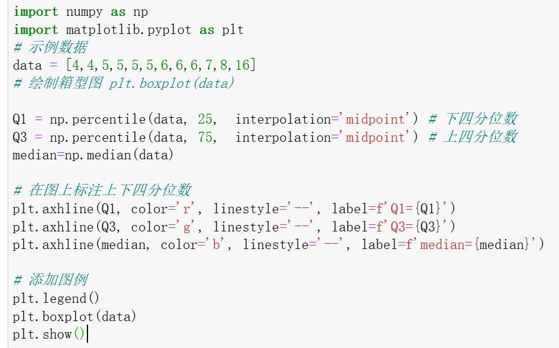
借助 plt.boxplot() 实现
第 16 页 · 处理异常值
处理异常值
简单统计量方法
观察数据的极大值和极小值。如学生的成绩，若出现负数肯定为异常值。
第 17 页 · 处理异常值
处理异常值
简单统计量方法
观察数据的极大值和极小值。如学生的成绩，若出现负数肯定为异常值。
3σ 方法
根据正态分布规律，99.73% 的数据位于均值 ±3σ 范围内，超出范围的数据视为异常值。[µ − 3σ, µ + 3σ]
第 18 页 · 处理异常值
处理异常值
简单统计量方法
观察数据的极大值和极小值。如学生的成绩，若出现负数肯定为异常值。
3σ 方法
根据正态分布规律，99.73% 的数据位于均值 ±3σ 范围内，超出范围的数据视为异常值。[µ − 3σ, µ + 3σ]
基于概率分布密度检测
通过概率密度函数判断数据的奇异程度。
第 19 页 · 处理异常值
处理异常值
简单统计量方法
观察数据的极大值和极小值。如学生的成绩，若出现负数肯定为异常值。
3σ 方法
根据正态分布规律，99.73% 的数据位于均值 ±3σ 范围内，超出范围的数据视为异常值。[µ − 3σ, µ + 3σ]
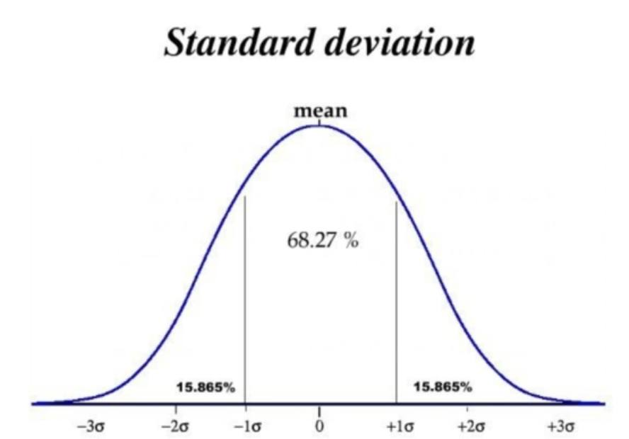
第 20 页 · 处理异常值
处理异常值
简单统计量方法
观察数据的极大值和极小值。如学生的成绩，若出现负数肯定为异常值。
3σ 方法
根据正态分布规律，99.73% 的数据位于均值 ±3σ 范围内，超出范围的数据视为异常值。[µ − 3σ, µ + 3σ]
基于概率分布密度检测
通过概率密度函数判断数据的奇异程度。
基于聚类的离群点检测
通过聚类算法，将离群点检测出来，此类离群点可能属于异常值。
第 21 页 · 处理异常值
处理异常值
异常值处理方法
删除：删除含有异常值的记录
视为缺失值：将异常值视为缺失值，按照缺失值进行处理；平均值修正：可用前后两个观测值的平均值修正该异常值；
不处理：忽视该异常值，或者不直接在具有异常值的数据集上进行数据挖掘。
第 22 页 · 知识点回顾及新知学习
知识点回顾及新知学习
数据预处理
数据缺失值处理：删除缺失值、用均值、中位数、众数代替缺失值；
第 23 页 · 知识点回顾及新知学习
知识点回顾及新知学习
数据预处理
数据缺失值处理：删除缺失值、用均值、中位数、众数代替缺失值；
异常值处理：删除异常值、视为缺失值、平均值修正、不处理；
异常值检测：箱形图；
第 24 页 · 知识点回顾及新知学习
知识点回顾及新知学习
数据预处理
数据缺失值处理：删除缺失值、用均值、中位数、众数代替缺失值；
异常值处理：删除异常值、视为缺失值、平均值修正、不处理；
异常值检测：箱形图；
噪声数据处理：人工检查、回归方法、分箱法。
等深分箱法：定义箱子内数值个数等宽分箱法：定义固定的区间范围用户自定义区间法
第 25 页 · 知识点回顾及新知学习
知识点回顾及新知学习
数据预处理
数据缺失值处理：删除缺失值、用均值、中位数、众数代替缺失值；
异常值处理：删除异常值、视为缺失值、平均值修正、不处理；
异常值检测：箱形图；
噪声数据处理：人工检查、回归方法、分箱法。
等深分箱法：定义箱子内数值个数等宽分箱法：定义固定的区间范围用户自定义区间法
处理重复数据和数据冲突处理
第 26 页 · 处理噪声数据
处理噪声数据
数据中的噪声（Noise）通常是由测量或记载误差所导致的，这些数据对数据分析造成了干扰。
| 电商场景 | 数据类型 | 噪声数据具体表现 |
| 用户身份管理 | 跨平台账号 | 同一用户在不同平台被识别为不同 ID，但手机号 / 收货地址重合度≥70% |
| 交易真实性校验 | 订单 + 评价 | 1. 订单：短时间大量相同商品下单2. 评价：文案雷同、含推广链接 |
| 商品信息管理 | 商品属性 | 1. 规格错误：“500ml 饮料” 标为 “5L”2. 分类错误：服装类商品归为 “3C 数码” |
第 27 页 · 处理噪声数据
处理噪声数据
数据中的噪声（Noise）通常是由测量或记载误差所导致的，这些数据对数据分析造成了干扰。
噪声数据处理方法
人工检查
根据业务和对数据本身的理解，人为的进行数据筛选
回归方法
试图发现两个或多个相关变量之间的变化模式，通过令数据拟合一个函数来平滑数据；
分箱（Binning）方法
通过考察相邻数据来确定最终值。主要包括等深分箱法、等宽分箱法、用户自定义区间法。
第 28 页 · 处理噪声数据
处理噪声数据
等深分箱法
等深分箱法, 又称统一权重法，是将数据集等分成 n 个等深箱，每个箱的观测值个数相同。
第 29 页 · 处理噪声数据
处理噪声数据
例
等深分箱法
等深分箱法, 又称统一权重法，是将数据集等分成 n 个等深箱，每个箱的观测值个数相同。
社区某日上午参与疫苗接种的居民年龄按从小到大进行排序后的值为：
{18,18,19,20,21,24,27,30,31,33,34,37,38,40,41,43,44,46,47,49}
箱 1：{18,18,19,20,21}
箱 2：{24,27,30,31,33}
箱 3：{34,37,38,40,41}
箱 4：{43,44,46,47,49}
第 30 页 · 处理噪声数据 Python 实现
处理噪声数据 Python 实现
Listing 5: 等深分箱
def equal_depth_binning(data, n):
# 计算每个箱的大小（每个箱包含的元素个数）
bin_size = len(data) // n
remainder = len(data) % n # 处理余数
bins = [] start = 0
for i in range(n):
# 如果有余数，前remainder个箱多分配一个元素
if i < remainder:
end = start + bin_size + 1 else:
end = start + bin_size bins.append(data[start:end]) start = end
return bins
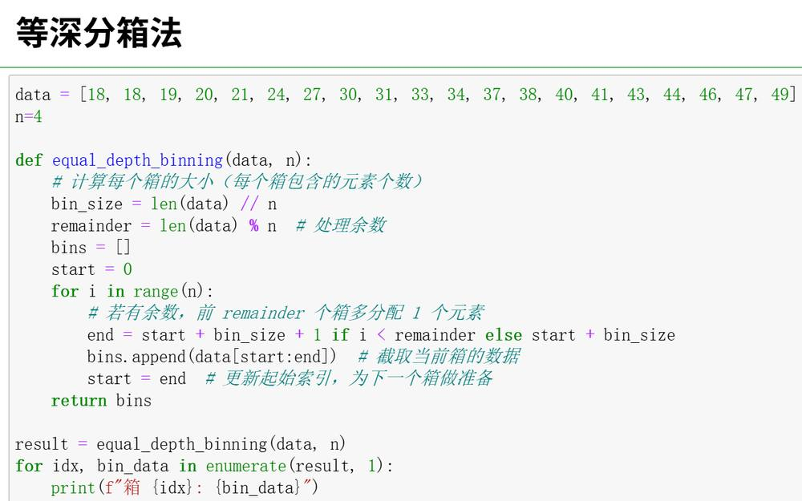
第 31 页 · 处理噪声数据
处理噪声数据
等宽分箱法
等宽分箱法。也称统一区间法，使数据集在整个属性值的区间上平均分布，即每个箱的区间范围是一个常量，称为箱子宽度。
第 32 页 · 处理噪声数据
处理噪声数据
例
等宽分箱法
等宽分箱法。也称统一区间法，使数据集在整个属性值的区间上平均分布，即每个箱的区间范围是一个常量，称为箱子宽度。
接上例，设定区间范围（箱子宽度）为 8 岁，上述例子分箱后的结果如下：
箱 1：{18,18,19,20,21,24}
箱 2：{27,30,31,33,34}
箱 3：{37,38,40,41,43,44}
箱 4：{46,47,49}
第 33 页 · 处理噪声数据 Python 实现
处理噪声数据 Python 实现
Listing 6: 等宽分箱
# 向上取整
def equal_width_binning(data, width):
# 计算最小值和最大值 min_val = data[0] max_val = data[-1]
# 计算需要的箱的数量
num_bins = ((max_val - min_val) + width - 1) // width bins = [[] for _ in range(num_bins)]
# 遍历数据，将每个值分配到对应的箱中
for value in data:
# 计算该值属于哪个箱
bin_index = (value - min_val) // width bins[bin_index].append(value)
return bins
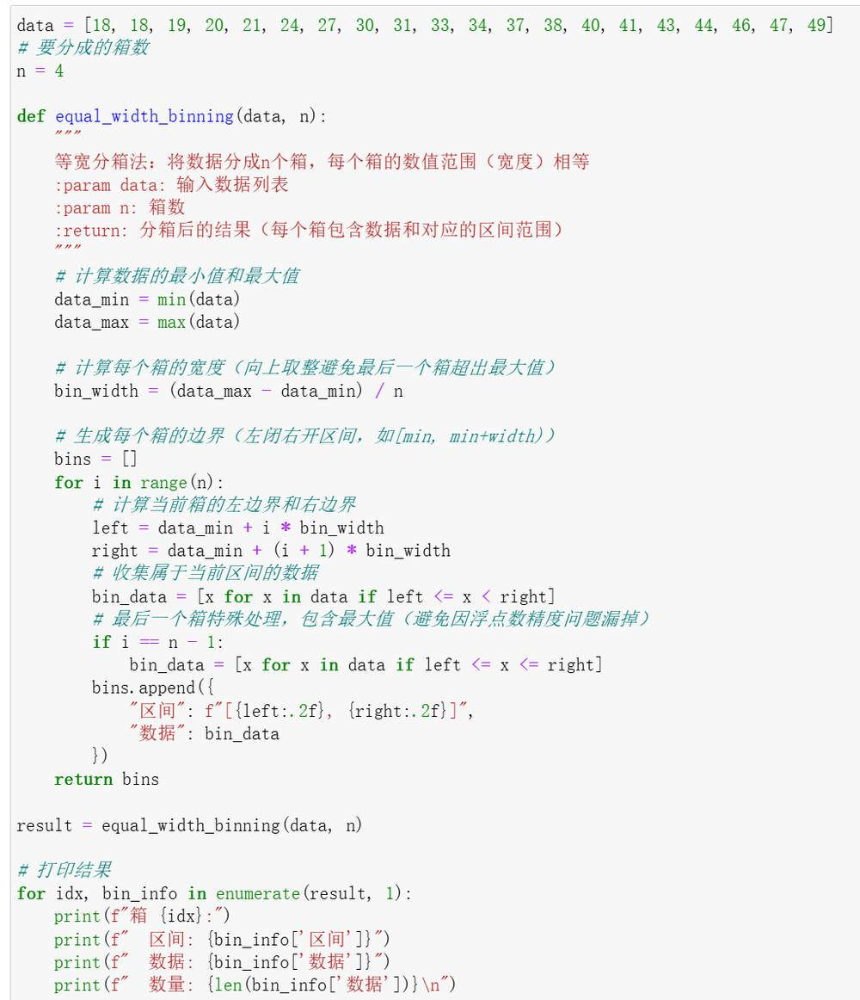
第 34 页 · 处理噪声数据
处理噪声数据
用户自定义区间
用户可以根据需要自定义区间，当用户明确希望观察某些区间范围内的数据分布时，使用这种方法可以方便地帮助用户达到目 的。
第 35 页 · 处理噪声数据
处理噪声数据
例
用户自定义区间
用户可以根据需要自定义区间，当用户明确希望观察某些区间范围内的数据分布时，使用这种方法可以方便地帮助用户达到目 的。
接上例，用户自定义：如将疫苗接种居民年龄划分为 20 岁以下
（不包含 20 岁）、20-29 岁、30-39 岁、40-49 岁和 50 岁以上（包含 50 岁）几组，分箱后结果如下：
箱 1：{18,18,19}
箱 2：{20,21,24,27}
箱 3：{30,31,33,34,37,38}
箱 4：{40,41,43,44,46,47,49}
第 36 页 · 处理噪声数据
处理噪声数据
分箱后平滑处理
数据平滑方法又可以细分为平均值平滑、边界值平滑和按中位数平滑。
1. 平均值平滑
对同一箱值中的数据求平均值，用平均值替代该箱子中的所有数据。
第 37 页 · 处理噪声数据
处理噪声数据
分箱后平滑处理
数据平滑方法又可以细分为平均值平滑、边界值平滑和按中位数平滑。
1. 平均值平滑
对同一箱值中的数据求平均值，用平均值替代该箱子中的所有数据。
例
接上例，等深分箱法分箱后的数据进行平滑处理后，各分箱的平均数 19.2，29，38，45.8 即为各分箱的代表数值。
第 38 页 · 处理噪声数据 Python 实现
处理噪声数据 Python 实现
Listing 7: 均值平滑
def mean_smoothing(binned_data):
"""
对分箱后的数据进行均值平滑处理
:param binned_data: 分箱后的数据（二维列表）
:return: 均值平滑处理后的数据
"""
smoothed_data = []
for bin in binned_data:
# 计算当前箱的平均值
mean_value = sum(bin) / len(bin) # 用平均值替代该箱中的所有数据
smoothed_bin = [mean_value] * len(bin) smoothed_data.extend(smoothed_bin)
return smoothed_data
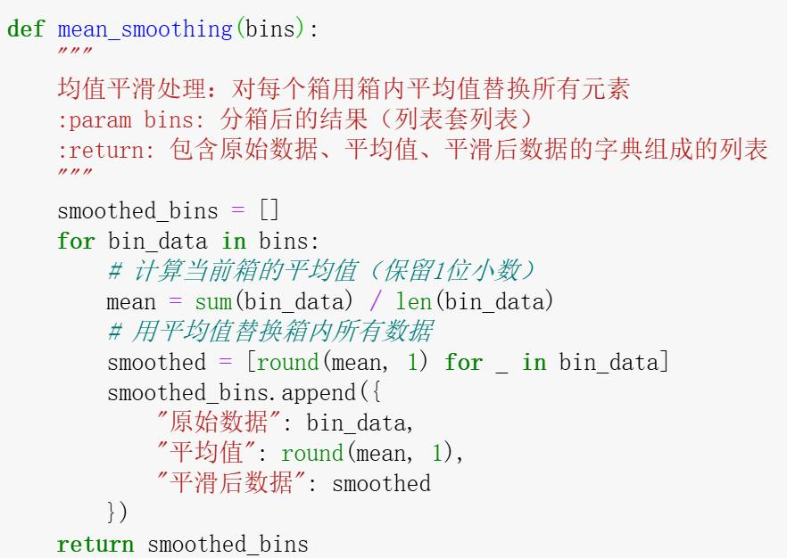
第 39 页 · 处理噪声数据
处理噪声数据
2. 边界值平滑
先确定两个边界，然后依次计算除边界值外的其他值与两个边界的距离，与之距离最小的边界确定为平滑边界值。
第 40 页 · 处理噪声数据
处理噪声数据
例
例：社区某日上午参与疫苗接种的居民年龄按从小到大进行排序后的值为：
{18,18,19,20,21,24,27,30,31,33,34,37,38,40,41,43,44,46,47,49}
箱 1：{18,18,19,20,21}
箱 2：{24,27,30,31,33}
箱 3：{34,37,38,40,41}
箱 4：{43,44,46,47,49}
第 41 页 · 处理噪声数据
处理噪声数据
例
2. 边界值平滑
先确定两个边界，然后依次计算除边界值外的其他值与两个边界的距离，与之距离最小的边界确定为平滑边界值。
接上例，以等深分箱法分箱后的数据为例：
箱 1：
|18-18| = 0; |18-21| = 3;
|19-18| = 1; |19-21| = 2;
|20-18| = 2; |20-21| = 1;
(0+1+2) < (3+2+1)
故选 18 作为平滑边界值。以此类推计算箱 2、箱 3、箱 4 的平滑边界值。
第 42 页 · 处理噪声数据 Python 实现
处理噪声数据 Python 实现
Listing 8: 边界值平滑
def boundary_smoothing(binned_data):
smoothed_data = []
for bin in binned_data:
min_val = bin[0] # 确定当前箱的两个边界值（最小值和最大值）
max_val = bin[-1] smoothed_bin = [] for value in bin:
if value == min_val or value == max_val: smoothed_bin.append(value) # 如果是边界值，直接保留
else:
distance_min = value - min_val # 计算与两个边界的距离
distance_max = max_val - value
if distance_min < distance_max: # 选择距离最小的边界值
smoothed_bin.append(min_val) else:
smoothed_bin.append(max_val) smoothed_data.extend(smoothed_bin)
return smoothed_data
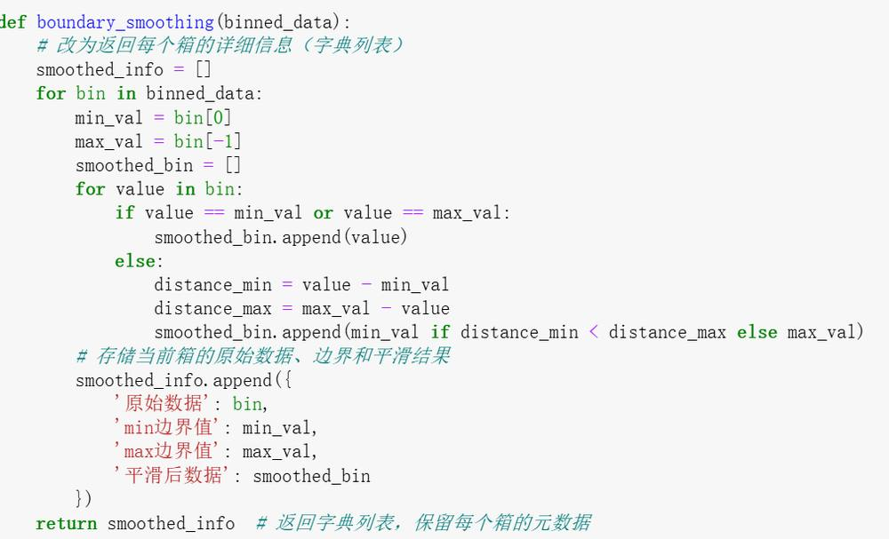
第 43 页 · 处理噪声数据
处理噪声数据
3. 中位数平滑
取箱子的中位数，用来代替箱子中的所有数据。
第 44 页 · 处理噪声数据
处理噪声数据
3. 中位数平滑
取箱子的中位数，用来代替箱子中的所有数据。
例
接上例，以等深分箱法分箱后的数据为例，其各箱的中位数 19， 30，38，46 即为各箱的代表数值。
第 45 页 · 处理噪声数据 Python 实现
处理噪声数据 Python 实现
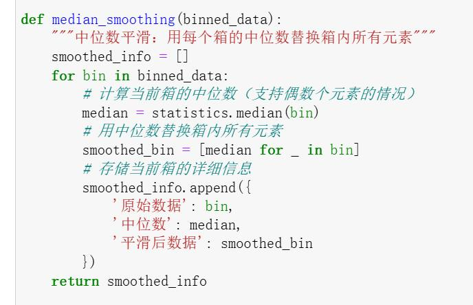
第 46 页 · 等深分箱法+均值平滑
等深分箱法+均值平滑
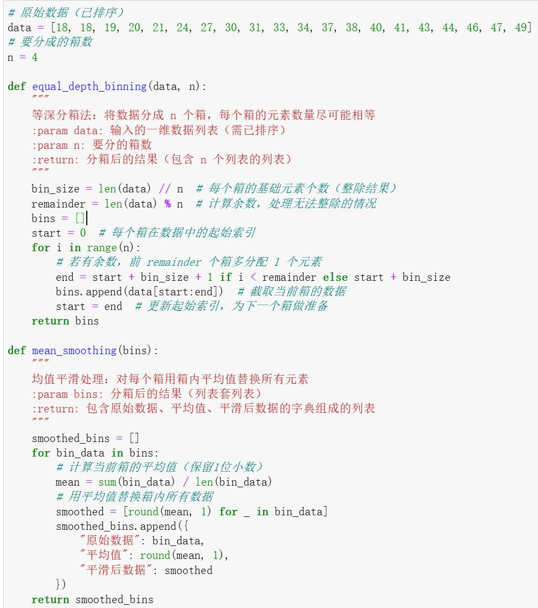
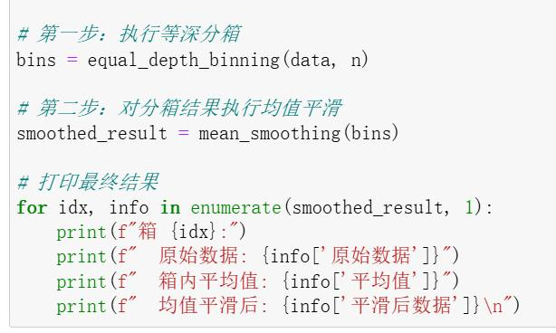
第 47 页 · 等宽分箱法+均值平滑
等宽分箱法+均值平滑
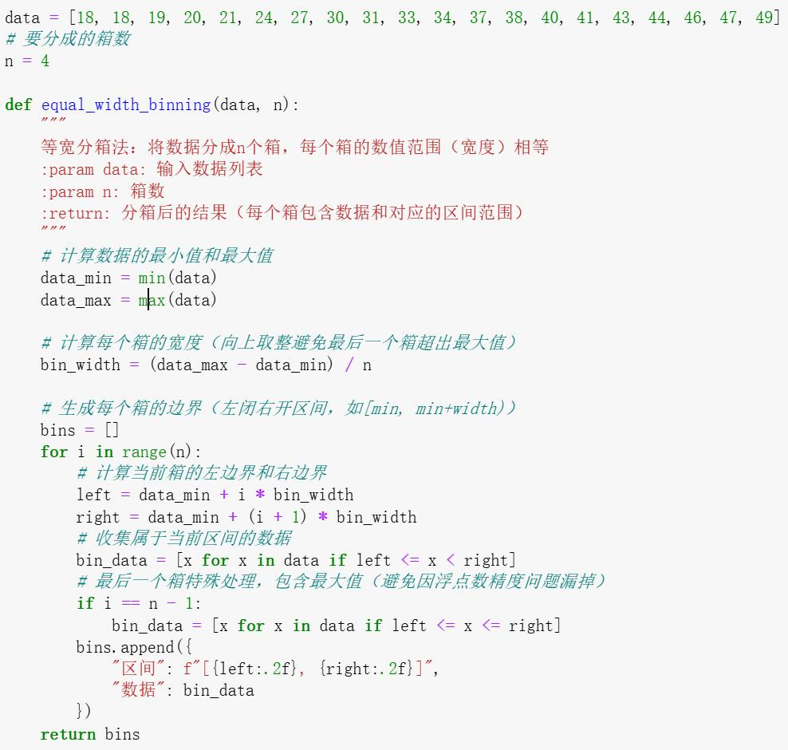
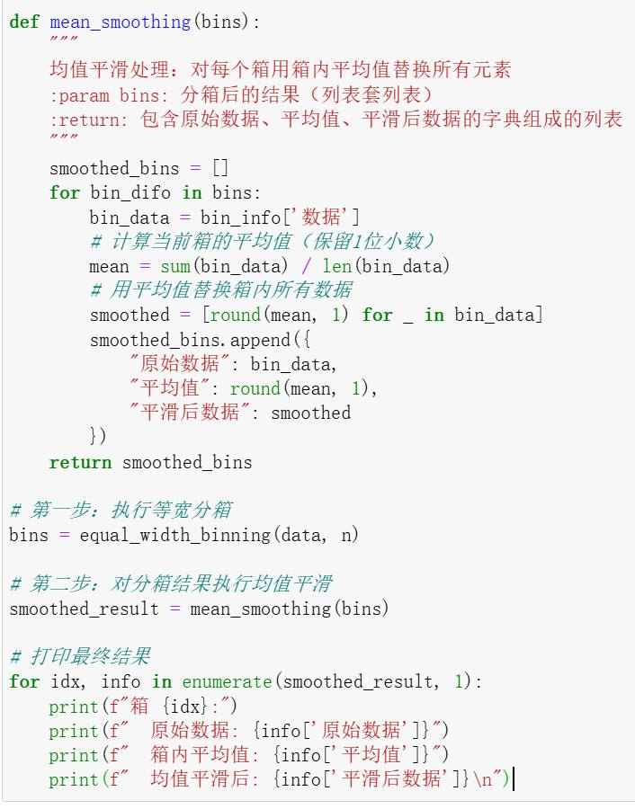
第 48 页 · 等深分箱法+边界平滑
等深分箱法+边界平滑
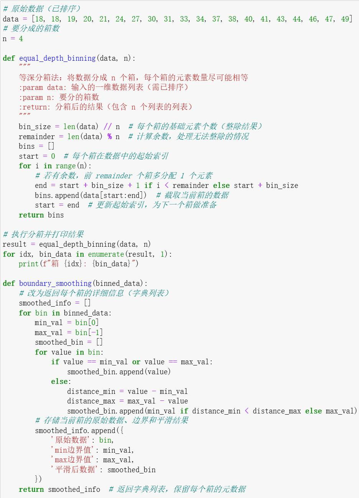
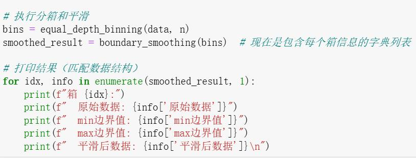
第 49 页 · 等宽分箱法+边界平滑
等宽分箱法+边界平滑
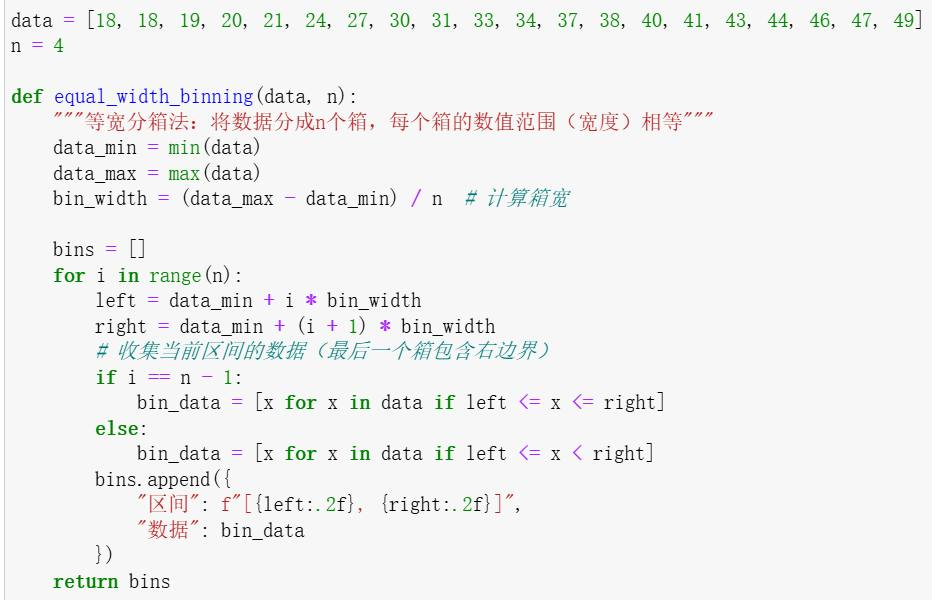
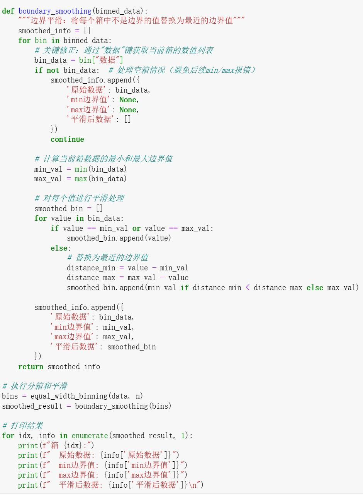
第 50 页 · 等深分箱法+中位数平滑
等深分箱法+中位数平滑
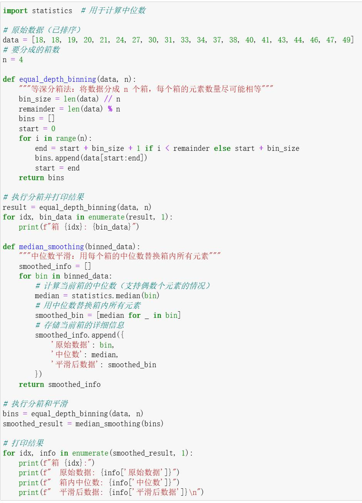
第 51 页 · 等宽分箱法+中位数平滑
等宽分箱法+中位数平滑
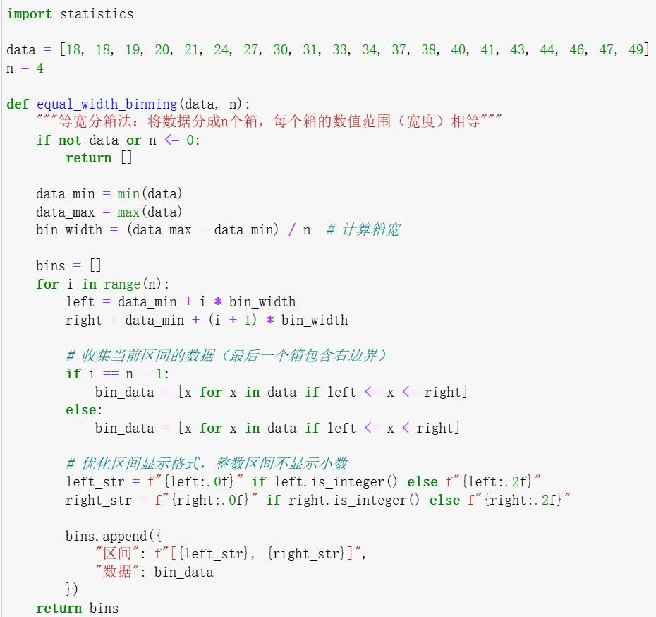
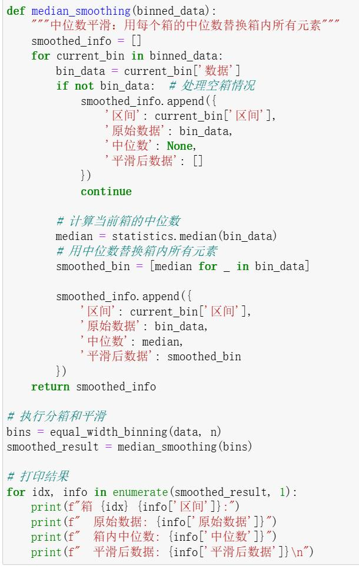
第 52 页 · 处理重复数据和数据冲突
处理重复数据和数据冲突
处理重复数据
查找相同的数据并删除
Listing 9: 去重操作
# 去重操作
df_cleaned = df.drop_duplicates()
第 53 页 · 处理重复数据和数据冲突
处理重复数据和数据冲突
处理重复数据
查找相同的数据并删除
Listing 11: 去重操作
# 去重操作
df_cleaned = df.drop_duplicates()
处理数据冲突
对两个数据源进行合并处理
Listing 12: 数据冲突处理
# 数据冲突处理
df_merged = pd.concat([df1, df2], ignore_index=True) # 按照 id 和 name 进行分组，取平均值
df_resolved = df_merged.groupby(['id', 'name'],\ as_index=False).agg({'score': 'mean'})